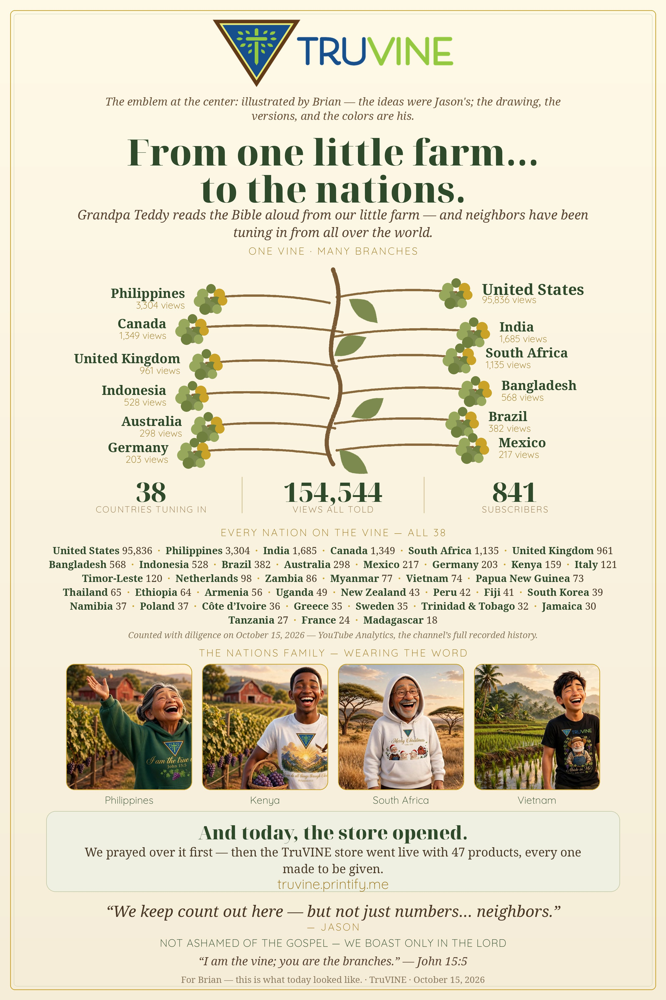

The Reach Poster
The poster, just as you drew it
Whole and unaltered, Brian — and beneath it, where things stand today.

The poster as first drawn — October 15, 2026. Its two headline figures — subscribers and views — now speak as of today, kept current like the numbers beneath; everything else on its face is October 15’s, and stands as it was.
As it stands today —
The same drawing, still traveling. The count beneath it is kept current.
- 841 Subscribers
- 154,544 Views all told
- 376 Videos
Figures as of October 15, 2026 — the day this poster was first drawn.
First drawn October 15, 2026 — the poster stands as drawn; its headline figures and the numbers beneath it are kept current.